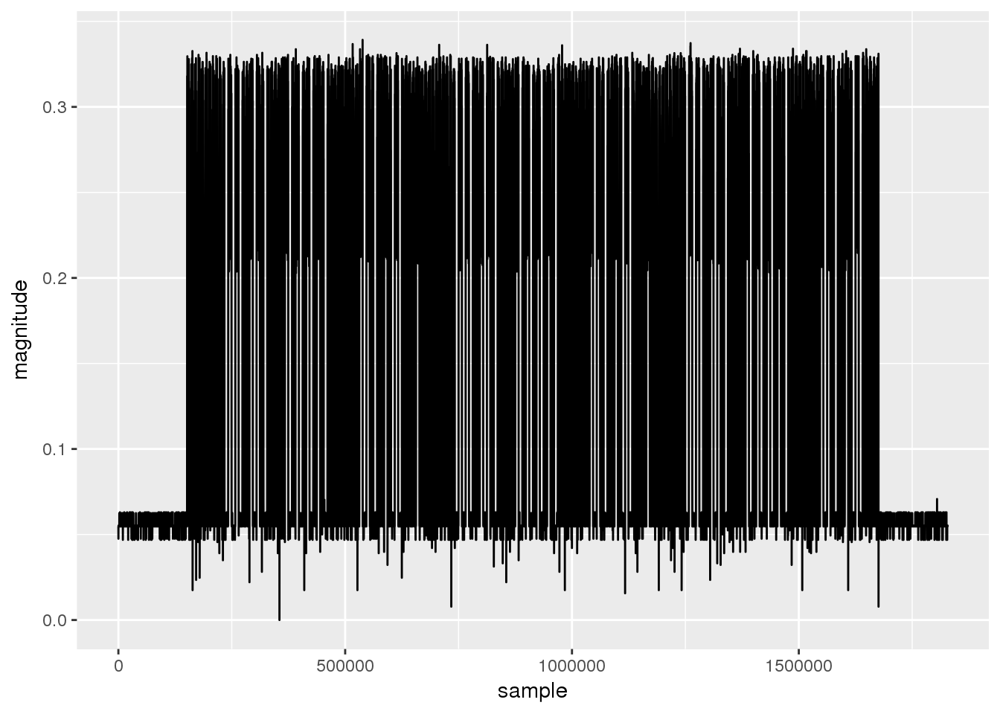

Jim’s Weatherstation
HackRF One
As a birthday present to myself I bought a HackRF One. The HackRF is a Software Defined Radio, which can send/receive anything between 1 MHz and 6 GHz, with a sampling frequency up to 20 MSps. It costs about $300, however, everything described in here can be replicated with a $20 RTL-SDR dongle (which is unable to transmit and has a lower sample rate). An SDR works by mixing i.e., multiplying the received signal with a sine and cosine of (roughly) the target frequency. The results are two samples, called I and Q.
While visiting my friend Jim, he showed me his weather station, which displays up to 4 inputs from battery powered temperature and humidity sensors. As a first project to play with the HackRF I decided to try and decode the data sent by the sensors.
The Sensor, front and back.
Turning Radiowaves into Bits
The sensor sends a burst of data on 433.9 MHz once every minute. I recorded such bursts in gqrx and parsed the gqrx output with a simple program (isolate_signal.c) to turn the I/Q samples into complex numbers readable by R.
library("ggplot2")
sig <- read.table("../samples/squelched_gqrx_20161212_191815_432000000_8000000_fc.raw.gz")
len <- length(sig$V1)
data = data.frame(sample=seq(1, len), magnitude=abs(sig$V1))Since the FCC documentation tells us that the sender uses ASK, we only care about the magnitude of each sample. If we plot a single burst (decimated by a factor of 100) we get
# lets look at the data
ggplot(data=data[seq(1, length(data$sample), 100),], aes(x=sample, y=magnitude)) + geom_line()
There are many points around zero, even during the burst, thus I assume the sender actually uses OOK, and everything above half the recorded maximum will be regarded as “on”, everything below as “off”. We apply a moving average to get rid of outlier samples, then consider everything above 0.75 the maximum value a high sample, represented by a one, everything else zero.
moving_average <- function(x,n=50){filter(x,rep(1/n,n), sides=2)}
data$magnitude = moving_average(data$magnitude)
data = data[complete.cases(data), ]
data$bin = as.integer(data$magnitude > 0.75*max(data$magnitude))
ggplot(data=data[seq(5e5, 7e5),], aes(x=sample, y=bin)) + geom_line() + geom_point()
That actually looks like data (note that this is also a zoomed in plot). It seems there are short and long pulses. Let us take a look at the pulse lengths (after removing the silence at the start/end):
rledata = rle(data$bin)
rledata = data.frame(idx=seq(1, length(rledata$values)), lengths=rledata$lengths, values=rledata$values)
rledata = rledata[seq(2, length(rledata$idx)-1), ] #remove the "silence" before and after
divider = min(rledata$lengths) + (max(rledata$lengths) - min(rledata$lengths)) / 2 # find the middle between long and short runs
ggplot(data=rledata, aes(x=idx, y=lengths, color=as.factor(values))) +
geom_point() +
geom_hline(yintercept=divider) +
scale_color_discrete("Value") +
scale_x_continuous("Pulse") +
scale_y_continuous("Pulse Length")Low periods (Value 0) seem to be always a little bit longer than high periods (Value 1). Thus, there are only two different period lengths, which we refer to as “short” and “long”. We can safely classify them by checking if they are above or below min+(max-min)/2. We can now encode the data in a bit string, long periods will be represented as a value beeing repeated twice.
repcnt = as.integer(rledata$lengths > divider) + 1
bitstr = paste(rep(rledata$values, repcnt), sep="", collapse="")
bitstr## [1] "101010101010101010101001100110010101100110100101010101011001011001011001011010010101010101010101011001101001010110100110010101010110101010101010101010100110011001010110011010010101010101100101100101100101101001010101010101010101100110100101011010011001010101011010101010101010101010011001100101011001101001010101010110010110010110010110100101010101010101010110011010010101101001100101010101"The fact that we have only two different period lengths, hints that the zeroes and ones are not actually data bits. A common encoding which leads to this pattern is Manchester coding, which xors the data stream with the clock. Each data bit is an entire clock period long. To assist clock recovery, data packets usually start with a lead-in of all ones or all zeroes. If the Manchester code assumption is correct, we should have an even number of bits in our string, and when broken into two character sequences, there should be only “10” and “01”.
bigrams = sapply(seq(from=1, to=nchar(bitstr), by=2), function(i) substr(bitstr, i, i+1))
bigrams## [1] "10" "10" "10" "10" "10" "10" "10" "10" "10" "10" "10" "01" "10" "01"
## [15] "10" "01" "01" "01" "10" "01" "10" "10" "01" "01" "01" "01" "01" "01"
## [29] "10" "01" "01" "10" "01" "01" "10" "01" "01" "10" "10" "01" "01" "01"
## [43] "01" "01" "01" "01" "01" "01" "01" "10" "01" "10" "10" "01" "01" "01"
## [57] "10" "10" "01" "10" "01" "01" "01" "01" "01" "10" "10" "10" "10" "10"
## [71] "10" "10" "10" "10" "10" "10" "01" "10" "01" "10" "01" "01" "01" "10"
## [85] "01" "10" "10" "01" "01" "01" "01" "01" "01" "10" "01" "01" "10" "01"
## [99] "01" "10" "01" "01" "10" "10" "01" "01" "01" "01" "01" "01" "01" "01"
## [113] "01" "01" "10" "01" "10" "10" "01" "01" "01" "10" "10" "01" "10" "01"
## [127] "01" "01" "01" "01" "10" "10" "10" "10" "10" "10" "10" "10" "10" "10"
## [141] "10" "01" "10" "01" "10" "01" "01" "01" "10" "01" "10" "10" "01" "01"
## [155] "01" "01" "01" "01" "10" "01" "01" "10" "01" "01" "10" "01" "01" "10"
## [169] "10" "01" "01" "01" "01" "01" "01" "01" "01" "01" "01" "10" "01" "10"
## [183] "10" "01" "01" "01" "10" "10" "01" "10" "01" "01" "01" "01" "01"unique(bigrams)## [1] "10" "01"This seems to fit :). Now the only decision to make is how to map those bigrams to 0 and 1. According to Wikipedia, both conventions exist, but it seems more common to use “high/low” to encode 1, so let’s go with that.
bits = paste(match(bigrams, c("01", "10")) - 1, sep="", collapse="")
bits## [1] "111111111110101000101100000010010010011000000000010110001101000001111111111101010001011000000100100100110000000000101100011010000011111111111010100010110000001001001001100000000001011000110100000"Turns out the same data is transmitted three times.
## [1] "11111111111010100010110000001001001001100000000001011000110100000"
## [2] "11111111111010100010110000001001001001100000000001011000110100000"
## [3] "11111111111010100010110000001001001001100000000001011000110100000"Let’s automate that
To identify the meaning of each bit, we need a lot more samples, at different temperatures and humidities. To get that, it would be nice to further automate our toolchain. I considered three options for that:
- Writing a HackRF library for GNU R
- Writing the decoder code in a language that has libhackrf bindings
- Using GNU Radio, a toolbox for SDR projects
While R is great to take an initial look at a recorded signal, it is probably not a good choice for decoding a signal in real time, since R works with static chunks of data, not with a data stream.
Writing the decoder code from scratch is labor-intensive and hard to debug for the same reason (I tried, after hitting some snags with gnu radio), for some things it’s really nice to have a “animated” plot of your signal possibly the ability to change some values using simple sliders, etc. Coding that in C or Perl is a work I did not want to do.
So I decided to take the third option (which has the capabilities described above), and basically replicate what we did above using GNU Radio. I will document my grc file seperately. My main issue with GNU Radio was that I did not find a good way to do the run-length encoding part. Possibly there are better/other ways to do the clock-recovery, e.g., there is a MM Clock Recovery Block, but like many things in GNU Radio, if you do not already know what it does, GNU Radio will surely not explain it to you, and as a result I did not get that to work. Then I tried making my own Run Lenght Encoder OOT GNU Radio block, but for some reason even the simplest OOT modules I built did not work in the GNU Radio Companion GUI, a bug that others have hit as well and no solution was found yet, aparently because the bug was not reproducible. I solved this by using embedded python blocks, i.e., a generic block whichs behaviour is defined by python code given by the user.
Turning Bits into Data
After I got that to work, I collected some samples while holding the temperature sensor in my hand to warm it up, and then placing it on a space heater (since samples are collected only once a minute the jump in temperature is quite drastic). The last two columns are the temperature and humidity values I read on the sensors display while recording the samples (could contain minor erros).
111111111110101000101100000010010 010001011000 00011011 10010010 0000 71.2 27
111111111110101000101100000010010 010001011001 00100010 00010010 0000 71.3 34
111111111110101000101100000010010 010001101010 00100011 11101010 0000 73.0 35
111111111110101000101100000010010 010010001011 00100001 11100100 0000 76.0 28
111111111110101000101100000010010 010010001011 00011011 00010111 0000 76.0 27
111111111110101000101100000010010 010010001011 00011000 00100111 0000 76.3 24
111111111110101000101100000010010 010101110110 00001101 10110101 0000 99.8 13
111111111110101000101100000010010 010101110100 00001101 00110011 0000 99.6 13
111111111110101000101100000010010 010110001011 00001101 00101000 0000 101.x 13Since the first 34 bits never change, I labelled them as header for now. The first thing I spottet was the humidity value encoded in 8 bits near the end of each packet, before a value that seems to have no correlation with the data. The temperature was a bit harder to figure out. I assumed fixed-point arithmetic is used here. If we plot the second column (translated to decimal) and the values read from the display, we see very good correlation:
library("reshape2")
recvd = c(1112, 1113, 1130, 1163, 1163, 1163, 1398, 1396, 1419)
read = c(71.2, 71.3, 73.0, 76.0, 76.0, 76.3, 99.8, 99.6, 101.0)
samp = seq(1, length(recvd))
data = data.frame(recvd, read, samp)
mdata = melt(data, id.vars="samp", variable.name="obtained")
ggplot(data=mdata, aes(x=samp, y=value)) + geom_point() + geom_line() + facet_wrap(~ obtained, scale="free_y")In fact if we divide the received data by 10 (no need to transmit floating point values) and subtract 40 (no need to transmit negative values, unless it gets really cold) we get
data$recvd = data$recvd/10 - 40
mdata = melt(data, id.vars="samp", variable.name="obtained")
ggplot(data=mdata, aes(x=samp, y=value, color=obtained)) + geom_point() + geom_line()The small errors in samples 4 and 5 are very likely just me reading the display slightly before/after the actual transmission. For the last sample I forgot to read the last digit and arbitrarily put it down as zero.
The last changing byte in the transmission (before the 0000) is maybe some sort of checksum, which I have not yet reverse engineered. Other things we have not looked at are how the channel selection and selection of celsius vs fahrenheit mode affect the transmission: As documented on the back side of the sensor, there are four DIP switches on the inside, which allow to select one out of eight channels for each sensor, as well as the temperature scale the unit should use. All samples above used channel 3, since that was the setting the sensor was in when I got it.
To ivestigate further, I took some samples for different channel / unit settings. Since we already figured out the temperature / humidity parts, I included the values displayed for those only in some of the samples:
data <- read.table("samples_pp.dat", header=T, colClasses=c("character", rep("numeric",3), "factor"))Let’s split the packet into individual bits and let us identify bits which always are the same.
splitString <- function(x) {strsplit(as.character(x), "")}
bitstrToBits <- function(x) {mapply(as.numeric, splitString(x))}
x <- bitstrToBits(data$packet)Now each row of x corresponds to one bit position in the input, if we calculate the sum over the rows we can see if the bit is always 1 (sum = #cols) or always zero (sum = 0) or variable (sum > 0 and sum < 1)
bitprob <- apply(x, 1, function(x){sum(x)/length(x)})
is.wholenumber <- function(x, tol = .Machine$double.eps^0.5) abs(x - round(x)) < tol
constantbits = sapply(bitprob, is.wholenumber)
bpdata = data.frame(const=constantbits, prob=bitprob, pos=seq(1:length(bitprob)))
ggplot(data=bpdata, aes(x=pos, y=prob, color=as.factor(const))) +
geom_point() +
scale_color_discrete("Constant") +
scale_x_continuous("Bit Position") +
scale_y_continuous("Probability of being 1")From that diagram and our previous observations, we can see that
- bits [ 1:21] are constant, let’s name them start_frame
- bits [62:65] are constant, let’s name them end_frame
- bits [46:53] contain the humidity value, thus the constant zero at 46, since humidity > 100% is rare :)
- bits [34:45] contain a biased temperature value
We now have two unknown, non-constant parts. however, if we repeat the above experiments only with samples from the channel 3, farenheit configuration (because thats what we have most of) we see that bits 22-33 are constant, thus it seems to be justified to call
- bits [22:33] configuration_bits
- bits [54:61] checksum_bits
Let’s break the packet into those parts and perform the conversions we already know about
# lets break up our packets as described above
data$start_frame = substr(data$packet, 1, 21)
data$end_frame = substr(data$packet, 62, 65)
data$humidity = substr(data$packet, 46, 53)
data$temperature = substr(data$packet, 34, 45)
data$config = substr(data$packet, 22, 33)
data$checksum = substr(data$packet, 54, 61)
# remove useless columns
data$packet = NULL;
data$start_frame = NULL;
data$end_frame = NULL;
# convert humidity / temperature to decimal values
BinToDec <- function(x) { sum(2^(which(rev(unlist(strsplit(as.character(x), "")) == 1))-1)) }
t = sapply(data$humidity, BinToDec)
data$humidity = as.vector(t)
t = sapply(data$temperature, BinToDec)
data$temperature = as.vector(t) / 10 - 40Note that even if the unit is set to celsius, the transmitted value is in F, thus the conversion happens only when the value is displayed (23C = 73.4F).
data[data$unit == "c",]## rtemp rhum chan unit humidity temperature config checksum
## 20 22.3 42 8 c 42 72.2 101110000111 10000010
## 21 22.6 39 8 c 39 72.6 101110000111 01101111
## 22 23.0 58 1 c 58 73.4 100001100000 11010101
## 23 NA NA 2 c 43 73.7 001100100001 10110110
## 24 NA NA 3 c 44 73.4 000101000010 11110110
## 25 NA NA 4 c 42 73.0 000110010011 01101110
## 26 NA NA 5 c 39 72.1 010100110100 01000000
## 27 NA NA 6 c 61 71.0 110101110101 10101100
## 28 NA NA 7 c 46 70.4 100111110110 00000111
## 29 NA NA 8 c 40 70.3 011000000111 00100011To figure out how the channels / units map to the config field, let’s get rid of all unneccessary data first
data$rtemp <- NULL
data$rhum <- NULL
data$temperature <- NULL
data$humidity <- NULL
data$checksum <- NULL
data = unique(data)At this point I could not see a clear pattern in the data
data## chan unit config
## 1 3 f 100000010010
## 10 6 f 101000000101
## 12 2 f 011011010001
## 13 1 f 000011000000
## 14 4 f 100001010011
## 16 5 f 011100110100
## 17 7 f 111010010110
## 19 8 f 011101100111
## 20 8 c 101110000111
## 22 1 c 100001100000
## 23 2 c 001100100001
## 24 3 c 000101000010
## 25 4 c 000110010011
## 26 5 c 010100110100
## 27 6 c 110101110101
## 28 7 c 100111110110
## 29 8 c 011000000111If we sort the data by channel however, a pattern emerges
data[order(data$chan),]## chan unit config
## 13 1 f 000011000000
## 22 1 c 100001100000
## 12 2 f 011011010001
## 23 2 c 001100100001
## 1 3 f 100000010010
## 24 3 c 000101000010
## 14 4 f 100001010011
## 25 4 c 000110010011
## 16 5 f 011100110100
## 26 5 c 010100110100
## 10 6 f 101000000101
## 27 6 c 110101110101
## 17 7 f 111010010110
## 28 7 c 100111110110
## 19 8 f 011101100111
## 20 8 c 101110000111
## 29 8 c 011000000111The last three bits of the config field (31:33 in the original packet) are equal to the channel number - 1 and bit 30 is always zero (of course we already saw that in the very first plot, but didn’t really pay attention) note that the last three bits directly correspond to the position of the first three dip switches as documented on the back of the receiver, down=0 and up=1 Another weird thing I noticed is that for the ch=8,c case we have two values instead of one!
data$channel = substr(data$config, 9, 12)
t = sapply(data$channel, BinToDec)
data$channel = as.vector(t)
data$config = substr(data$config, 1,8)
data$chan = NULLTo solve the remaining mysteries I recorded a lot more samples. This time I turned the sensor on and off multiple times while recording data for the same configuration.
data = read.table("samples_new.txt", colClasses = "character", col.names = "packet")
data = unique(data)
# lets break up our packets as described above
data$start_frame = substr(data$packet, 1, 21)
data$end_frame = substr(data$packet, 62, 65)
data$humidity = substr(data$packet, 46, 53)
data$temperature = substr(data$packet, 34, 45)
data$config = substr(data$packet, 22, 29)
data$channel = substr(data$packet, 30, 33)
data$checksum = substr(data$packet, 54, 61)
# convert humidity / temperature to decimal values
t = sapply(data$humidity, BinToDec)
data$humidity_val = as.vector(t)
t = sapply(data$temperature, BinToDec)
data$temperature_val = as.vector(t) / 10 - 40
t = sapply(data$channel, BinToDec)
data$channel_val = as.vector(t)
t = sapply(data$config, BinToDec)
data$config_val = as.vector(t)
ggplot(data=data, aes(x=seq(1, length(data$packet)), y=as.factor(config), color=as.factor(channel))) +
geom_point() +
scale_x_continuous("Packet Index") +
scale_y_discrete("Config Bits") +
scale_color_discrete("Channel")I conclude that bits [22:29] have nothing to do with the dip switch setting / configuration. Every time the sensor is restarted, i.e., by replacing the batteries, they take a new, more or less random, value. The randomness does not seem too good, since we got the same value 3 times. If I had to guess I would suggest the sensor uses the current temperature and or humidity when it is powered up as a random seed. The reason why this is done is probably to allow neighbours to operate the same weather station and sensors, even on the same channels. There is probably a “discovery mode” in which the weather station listens to any sensor, and once it found one, it ignores all transmissions on the same channel that have different “config” bits.
Now the only thing left is to reverse engineer the checksum part. My initial guess was that it is a 8 bit CRC. However, exhaustively searched all possible CRC configurations as well as packet subsets to apply the CRC to, and no combination matched. Let’s try to find two identical packets where only the n-th bit is different, and see how that affected the checksum.
hamming_pair <- function(x,y) {
if (nchar(x) != nchar(y) ) {warning("x and y do not have the same length")}
x = strsplit(x, "")
y = strsplit(y, "")
x = as.vector(sapply(x, as.numeric, simplify = T))
y = as.vector(sapply(y, as.numeric, simplify = T))
return(length(x[x != y]))
}
a = c()
b = c()
for (i in seq(1, length(data$packet))) {
for (j in seq(1, length(data$packet))) {
p1 = data$packet[i];
p2 = data$packet[j];
p1 = substr(p1, 1, 53)
p2 = substr(p2, 1, 53)
h = hamming_pair(x=p1, y=p2)
if ((h == 1) && (i<j)) {
a = append(a, (data$packet[i]))
b = append(b, (data$packet[j]))
}
}
}
bitdiffs = data.frame(a=a, b=b)
bitdiffs$data_a = substr(bitdiffs$a, 22, 53)
bitdiffs$data_b = substr(bitdiffs$b, 22, 53)
bitdiffs$chk_a = substr(bitdiffs$a, 54, 61)
bitdiffs$chk_b = substr(bitdiffs$b, 54, 61)
diffs = c()
for (i in seq(1, length(bitdiffs$data_a))) {
a=bitdiffs$data_a[i];
b=bitdiffs$data_b[i];
d=(unlist(strsplit(a, "")) != unlist(strsplit(b, "")));
diffs=append(diffs, which(d))
}
bitdiffs$diffs = diffs
diffbits <- function(a, b) {
d=(unlist(strsplit(a, "")) != unlist(strsplit(b, "")));
return(paste(as.integer(d), sep="", collapse=""))
}
for (i in seq(1, length(bitdiffs$chk_a))) {bitdiffs$diffmask[i] = (diffbits(bitdiffs[i,]$chk_a, bitdiffs[i,]$chk_b))}
d = unique(data.frame(pos=bitdiffs$diffs, diff=bitdiffs$diffmask))
d[order(d$pos),]## pos diff
## 100 16 01101110
## 118 17 00110111
## 56 18 10000011
## 64 19 11011001
## 60 20 11110100
## 2 21 01111010
## 6 22 00111101
## 7 23 10000110
## 1 24 01000011
## 208 26 11000100
## 234 27 01100010
## 169 28 00110001
## 183 29 10000000
## 170 30 01000000
## 3 31 00100000
## 52 32 00010000